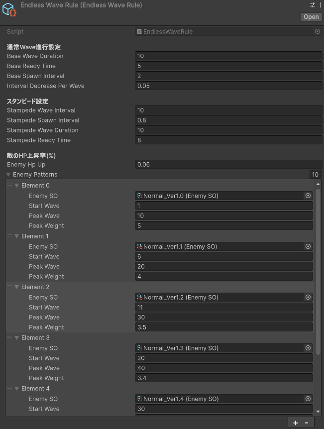
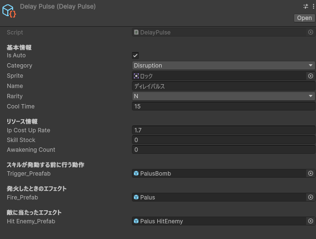

ローグライト
爆弾迎撃アクション
Bomb Crash
凍結爆弾でカウントダウン式の敵を迎撃し、スクラップを集めながらWaveの攻略に挑む2Dアクションゲームです。
作品の要点
制作体制
チーム制作。企画・プログラミング・UI実装を担当。
Wave生成の仕組み
ScriptableObjectのWave設定をWaveGeneratorが実行時データに変換し、WaveManagerとEnemySpawnControllerが進行・出現を担います。
紹介動画
ゲーム概要
「BombCrash」は、次々と湧いてくるカウントダウン爆弾（敵）を、強力な凍結爆弾で破壊する爽快アクションゲームです。
プレイヤーはキャラクターを操作し、敵を倒してスクラップを入手します。
スクラップは装備の購入・強化に使用します。知見ポイント（IP）はウェーブ到達状況などに応じてリザルトで獲得します。
このゲームでは、Wave(波)の概念を採用しており、Wave数が上がるにつれ敵が強くなっていくようになっています。
- 敵はHPと爆発までのカウントダウンを持ち、時間切れになる前に撃破する必要があります。
- プレイヤーは爆弾の着弾位置を調整して投げ、敵を倒すとスクラップを獲得します。爆弾は所持数に上限があり、時間経過で補充されます。
- スクラップは装備の購入・強化に使用します。知見ポイント（IP）はウェーブ到達状況などに応じてリザルトで獲得します。
- オトモに装備したスキルはZ / X / Cで使用でき、スキルの設定によっては自動発動します。必殺技は使用可能な状態でVキーから発動します。
- ウェーブの敵出現が終了し、フィールド上の敵もいなくなると次のウェーブへ進みます。一定間隔のスタンピードやボス出現も設定されています。
- 敵のカウントダウンが尽きると爆発してゲームオーバーとなり、リザルトで到達ウェーブや獲得資源を確認できます。
操作
- 左右移動: ← / →、爆弾の着弾位置調整: ↑ / ↓、爆弾を投げる: Space
- 装備スキル: Z / X / C、必殺技（使用可能時）: V
- ホーム画面などのUI操作: マウスクリック、ゲームオーバー演出後にホームへ戻る: Space
ゲーム進行・処理フロー
出撃からウェーブ戦闘、リザルトまでのゲーム進行と、ウェーブ設定から敵を出現させる処理の流れです。
プレイの基本ループと終了条件
- 出撃ホームからゲームを開始し、ローディングを経て戦闘へ
- 敵が出現ウェーブ設定に従って敵がフィールドに登場
- 爆弾で迎撃着弾位置を調整して凍結爆弾を投げ、敵を撃破
- 次のWave / ゲームオーバー出現終了かつ敵がいなければ次のWaveへ。敵のカウントダウンが尽きた場合はゲームオーバーとなり、リザルトへ
ウェーブ・リザルト処理
- ルールから生成EndlessWaveRuleと敵データから時間・出現間隔・候補を構成
- 敵を出現・進行WaveManagerが進行とUIを管理し、EnemySpawnControllerが敵を配置
- 結果を反映討伐数・スクラップを更新し、到達ウェーブと獲得資源を表示
オトモスキルの装備・発動
- 装備を反映出撃時にOtomoSkillManagerが装備スロットのスキルを読み込む
- 発動方式を判定OtomoSkillRunnerがZ / X / C入力を確認。自動設定スキルは敵がいる場合に発動を試みる
- 発動・再使用待ちSkillSO.Execute()を実行し、設定されたクールタイム中は再発動しない
装備処理フロー
- スクラップを獲得敵を撃破してゲーム内資源を入手
- 装備を購入・強化スクラップを使って装備を整え、プレイヤー能力を補助
- 次の出撃に備える装備内容を確認して、より先のウェーブに挑戦
オトモ処理フロー
- オトモを解放一定の到達ウェーブを条件に解放される
- スキルを装備オトモにスキルを設定し、手動または設定に応じて自動で使用
- 戦闘を支援クールタイムや使用可能状態に従ってスキルを発動
ゲーム設定画面
現在の実装範囲
スキルガチャは未実装のため、ホーム画面のガチャボタンは無効です。
Endless Waveの生成

スキルのデータ

実装のポイント：ウェーブ生成とスキル発動
EndlessWaveRuleの設定からWaveGeneratorが敵の出現候補と比重を組み立て、WaveManagerとEnemySpawnControllerが進行と配置を分担します。
Waveごとの出現条件を組み立てる
Waveごとの出現条件を設定するEndlessWaveRuleをもとに、WaveGeneratorが回ごとの出現設定を作成。EnemySpawnControllerが敵の比重から出現対象を選び、WaveManagerがボスやスタンピードを含む進行を扱います。
スキルの発動方法をそろえる
手動・自動の発動とクールタイムを管理するOtomoSkillRunnerが、装備スロットとZ / X / C入力を扱います。スキル共通の情報と実行口はSkillSOに定義しています。Wave設定とスキル設定の画面は上のスクリーンショットで紹介しています。
float t = Mathf.InverseLerp(pattern.startWave, pattern.peakWave, waveNumber);
float weight = Mathf.Lerp(0f, pattern.peakWeight, Mathf.Clamp01(t));
if (weight > 0f)
options.Add(new IntervalWaveData.EnemySpawnOption
{
enemySO = pattern.enemySO,
weight = weight
});